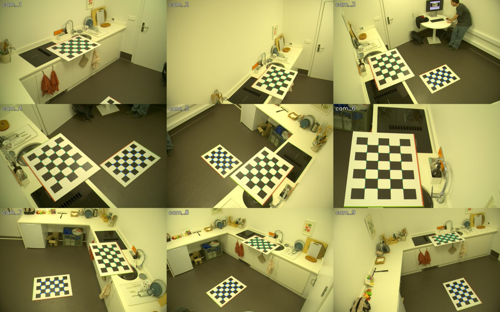
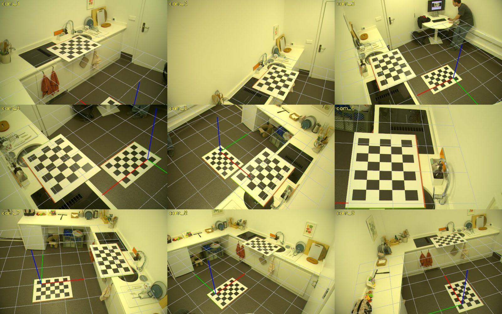
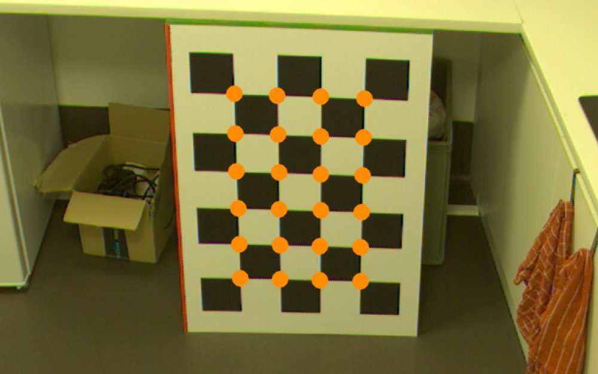
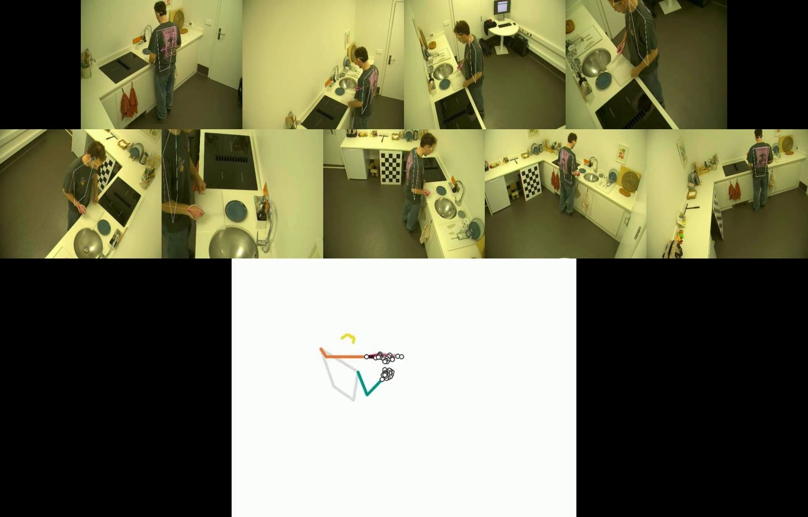
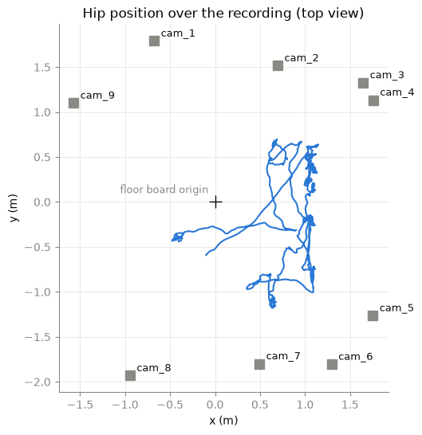
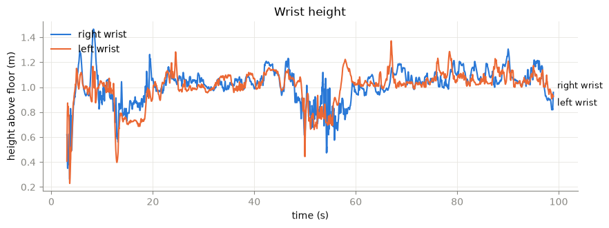

How the nine kitchen cameras were calibrated from the checkerboard photos saved with the recording, how this fits ATHENA's instructions, and the checks showing that the resulting 3D tracking is correct.
ATHENA's README lists four steps. Each was carried out with ATHENA's own code; the table says where the method differs from what the README suggests, and why.
| README step | What ATHENA asks for | What was done | Status |
|---|---|---|---|
| 1 · Organize videos | videos/<recording>/cam*.avi or .mp4, plus a calibration/ folder |
The recorder's MKV files were repackaged as AVI without re-encoding (frames are bit-identical, 4118 per camera at 40 fps). Cameras were renamed cam0–cam8 in a fixed order (cam0 = lab cam_1, etc.). |
Followed |
| 2 · Calibration files | JARVIS (YAML) or Anipose (TOML) files with intrinsics, distortion and extrinsics; camera names must match the video names. The README recommends calibrating with the JARVIS toolbox. | No calibration had been made, and JARVIS or Anipose need a dedicated video of a board moved through the room. The calibration was instead computed from the checkerboard photo the recorder takes at the start of every capture, and written as an Anipose TOML file with cameras named cam0–cam8. ATHENA's own reader loads it and its cameras match the videos. |
Format followed, method differs |
| 3 · Processing | Run the GUI: 2D detection, then triangulation and refinement | The same ATHENA functions called from a notebook, with the GUI's option names. Two settings changed: detection confidence 0.5 instead of 0.9 (at 0.9 the body was missed in most frames of this room), and the 3D and reprojected videos switched on. | Followed, 2 settings changed |
| 4 · Montage | athena-montage: all views and the 3D skeleton in one video |
ATHENA's montage script fails with the installed version of its video library (moviepy 2). The same layout was re-implemented. | Re-implemented |
At the start of the capture, all nine cameras took one photo at the same instant of two checkerboards of 7 × 5 squares, 10 cm each: one on the floor, one on the counter. The lens focal lengths (8, 12 and 16 mm) from the recorder's configuration and the sensor's pixel size (5.86 µm) served only as starting values.

One file, calibration/calibration.toml, giving each camera's focal length, radial distortion, rotation and position.
| ATHENA | Lab name | Lens | Boards seen | Focal length | Error | Position x, y, z |
|---|---|---|---|---|---|---|
| cam0 | cam_1 | 12 mm | 1 | 2119 px | 0.55 px | −0.68, 1.79, 2.43 m |
| cam1 | cam_2 | 8 mm | 1 | 1460 px | 0.36 px | 0.70, 1.52, 2.42 m |
| cam2 | cam_3 | 8 mm | 2 | 1438 px | 0.43 px | 1.65, 1.33, 2.41 m |
| cam3 | cam_4 | 12 mm | 2 | 2076 px | 0.71 px | 1.76, 1.13, 2.41 m |
| cam4 | cam_5 | 8 mm | 2 | 1464 px | 0.66 px | 1.75, −1.26, 2.44 m |
| cam5 | cam_6 | 16 mm | 1 | 3090 px | 0.73 px | 1.30, −1.81, 2.52 m |
| cam6 | cam_7 | 8 mm | 2 | 1466 px | 0.49 px | 0.49, −1.80, 2.44 m |
| cam7 | cam_8 | 8 mm | 2 | 1462 px | 0.40 px | −0.94, −1.93, 2.45 m |
| cam8 | cam_9 | 8 mm | 2 | 1545 px | 0.86 px | −1.57, 1.10, 2.59 m |
Error is the root-mean-square distance, in pixels, between where the board corners were detected and where the calibration places them. Positions are relative to the floor board's corner. Five of the six 8 mm cameras agree on their focal length within 2 % (1438–1466 px), as identical lenses should; cam_9 comes out 6 % higher.


| Cameras used | Square size | Flatness | Fit |
|---|---|---|---|
| cam_5 + cam_7 | 99.7 ± 0.8 mm | 1.0 mm | 0.25 px |
| cam_5 + cam_8 | 99.7 ± 0.8 mm | 0.8 mm | 0.17 px |
| cam_7 + cam_8 | 100.3 ± 0.9 mm | 1.1 mm | 0.05 px |
| all three | 99.8 ± 0.8 mm | 0.9 mm | 0.69 px |
Rebuilt in 3D with the calibration as ATHENA loads it, the board has 10 cm squares to within 0.3 %, is flat to about 1 mm, and stands nearly upright (5–6° lean) with its centre 41–42 cm above the floor, as a board standing against a cabinet should.


